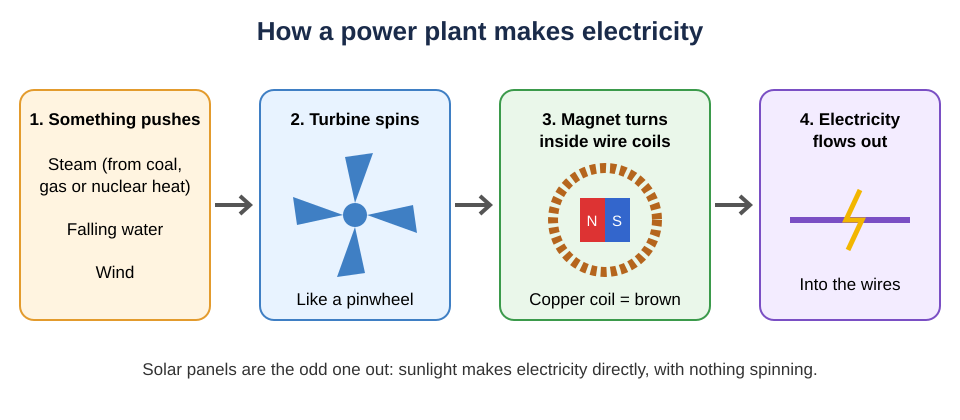
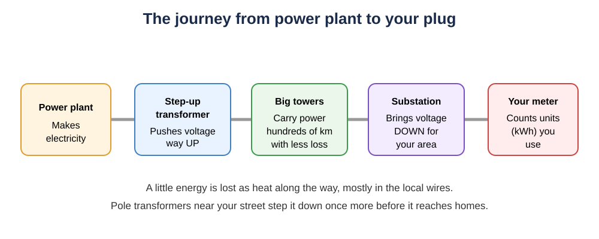
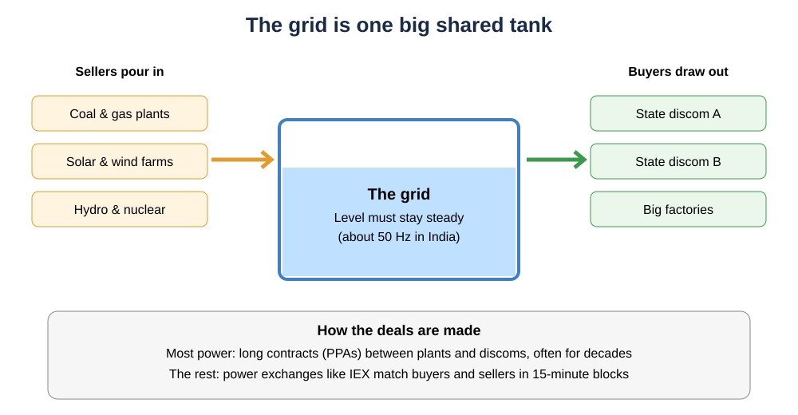

How Electricity Is Generated and Sold: Spinning Magnets, Units and a Giant Shared Tank
Almost every power plant just spins a magnet. A plain-English guide to how electricity is made, what a 'unit' really is, and how India buys and sells power.
You flip a switch and the fan starts. Simple. But somewhere, maybe hundreds of kilometres away, something just had to work a tiny bit harder to make that happen. Right that second.
And here's the weird part. Electricity is invisible. You can't pour it into a bucket. Yet power companies and governments buy and sell it by the "unit", like rice by the kilo or petrol by the litre.
So what exactly are they selling? Let's follow the power from the plant to your plug, and see how anyone can trade something you can't even see.
Step 1: almost every power plant is a fancy pinwheel
Back in 1831, a scientist called Michael Faraday found something magical: move a magnet inside a coil of wire, and electricity flows through the wire. That one trick still runs the world.

A power plant just needs a way to keep that magnet spinning. So it uses a turbine, which is basically a big pinwheel with blades:
- Coal, gas and nuclear plants make heat, boil water into steam, and the steam blasts the turbine round.
- Hydro dams let falling water push the blades.
- Wind turbines let the wind do it.
Did you know? A nuclear plant is, in a sense, a very high-tech kettle. All that science just to boil water and spin a fan.
The odd one out is solar panels. They turn sunlight straight into electricity, with nothing spinning at all.
Step 2: what is a "unit", anyway?
Your electricity bill counts units. One unit is one kilowatt-hour (kWh).
Two words to untangle:
- Watts tell you how hungry a device is right now. A 1,000-watt heater gulps power faster than a 10-watt LED bulb.
- Kilowatt-hours tell you how much it ate in total over time.
So one unit is a 1,000-watt heater running for one hour. Or a 10-watt LED bulb running for 100 hours. Same unit, different speed.
What about your phone? A typical big phone battery (5,000 mAh) holds roughly 19 watt-hours. That means one unit could charge it from empty about 50 times. Your phone is a very cheap snack.
The water-pipe trick
Picture electricity as water in a pipe:
- Voltage is the water pressure: how hard it's being pushed.
- Current is how much water flows through each second.
- Power (watts) is pressure × flow: how much work the water can do right now, like spinning a water wheel.
Step 3: the long road to your home

Power plants are often far from cities. To send power a long way, a step-up transformer cranks the voltage way up. Think of it as high pressure, low flow. Less flow means the wires heat up less, so less energy is wasted along the way.
Near your area, a substation turns the pressure back down, and a transformer on a nearby pole steps it down again to the level your sockets use.
Some energy still escapes as heat. In India, losses on the big long-distance lines are only about 3–4% a year. Most of the trouble is in the final local wiring, plus power that's used but never properly billed (yes, including theft). Together those add up to about 15% nationally in 2024-25, down from about 22% in 2020-21.
Step 4: the grid is one giant shared tank

Here's the key idea. All the power plants pour into one big shared "tank": the grid. Everyone draws out of the same tank.
But this tank has a catch. It's tiny compared to what flows through it. Storing electricity in bulk is still hard and expensive, so what goes in must match what comes out, every single second.
How do engineers know if it's balanced? They watch the frequency: how many times per second the electricity wiggles back and forth. In India it's set at 50 times a second (50 Hz), and the rules say it should stay between 49.90 and 50.05.
- Too much demand? The spinning generators get dragged slightly slower, and the frequency drops.
- Too much supply? They speed up a little, and it rises.
Grid controllers watch it like a tank's water level and tell plants to push more or less.
Step 5: so how is it bought and sold?
Since you can't store much of it, electricity is sold by time slots. In India, a day is cut into 96 blocks of 15 minutes each.
Who buys? Mostly your state's distribution company, called a discom. It's the company that sends your bill.
Long-term deals. Most power is bought through power purchase agreements (PPAs): long contracts where a plant promises to supply a discom at an agreed price. In 2024-25, about 87% of India's electricity went through long-term deals and trades within each state.
Short-term trading. The rest is traded in short-term markets, including power exchanges like the Indian Energy Exchange (IEX). It works a bit like an auction. Sellers say "I'll supply this much at this price", buyers say what they want, and the exchange finds a price where they meet, for each 15-minute block. There's a day-ahead market (bid today for tomorrow) and a real-time market (bid about an hour ahead).
Prices are quoted per megawatt-hour (1,000 units). Divide by 1,000 to get rupees per unit. Prices swing wildly through the day. On 13 October 2026, IEX's day-ahead price hit its ₹10,000/MWh ceiling (₹10 a unit) in late-night blocks, but fell to around ₹2,000/MWh (about ₹2 a unit) in the sunny afternoon, when solar floods in.
Thanks, sun.
"But which electrons are mine?"
Nobody knows! And it doesn't matter.
Think of a shared village water tank. Nobody cares which drops came from whom. What matters is the meter readings: how much each person poured in, and how much each took out.
Electricity works the same way. Plants, discoms and you are all metered. The money follows the meters, not the electrons. That's why it can be traded "like a physical quantity": what's really being sold is measured energy at a certain time.
Your meter and your bill
Your home meter simply counts kWh, the same units the big players trade. Your bill is roughly: units used × price per unit, plus fixed charges and taxes. Many states charge more per unit as you use more (slab rates), and newer smart meters can even track when you use power.
Quick FAQ
How is electricity made? Mostly by spinning a magnet inside wire coils. Steam, water or wind does the spinning. Solar panels are the exception.
What is one unit of electricity? One kilowatt-hour: a 1,000-watt device running for an hour.
What does 50 Hz mean? The electricity flips direction 50 times a second. If that number drifts, supply and demand are out of balance.
Who sells electricity to me? Your state discom. It buys power from plants (mostly via long contracts) and from exchanges like IEX.
Key takeaways
- Nearly all power plants spin a magnet inside a coil; solar panels don't spin anything.
- One unit = 1 kWh = a 1,000 W heater for an hour.
- The grid is a shared tank that must balance every second, tracked by its 50 Hz frequency.
- Money follows the meters, not the electrons.
Sources
- U.S. Energy Information Administration, "How electricity is generated" — https://www.eia.gov/energyexplained/electricity/how-electricity-is-generated.php
- U.S. EIA, "Electricity in the U.S." — https://www.eia.gov/energyexplained/electricity/electricity-in-the-us.php
- CERC, Indian Electricity Grid Code / Suo Motu Order 2/SM/2025 (50 Hz reference, 49.90–50.05 Hz band) — https://cercind.gov.in/2025/orders/2-SM-2025.pdf
- CERC, "Report on Short-Term Power Market in India: 2024-25" — https://cercind.gov.in/2025/market_monitoring/Annual-Report-2024-25.pdf
- Ministry of Power, Lok Sabha reply on transmission and AT&C losses — https://sansad.in/getFile/lsapps/loksabhaquestions/annex/188/AU2063_7Fcnh4.pdf
- IEX, Day-Ahead Market snapshot (15-minute blocks, prices in Rs/MWh) — https://www.iexindia.com/market-data/day-ahead-market/market-snapshot
- IEX, Real-Time Market snapshot — https://www.iexindia.com/market-data/real-time-market/market-snapshot